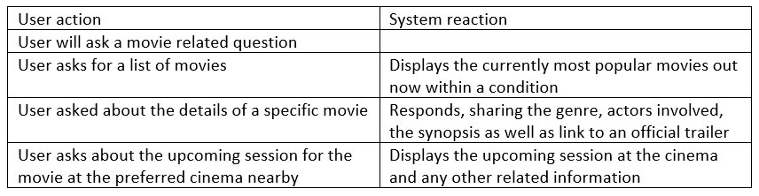

The chatbot would be called poppy, for its casual but friendly association with popcorn. Its features will include features that users decide what movies they would like to watch based on the basic information of the movie's plot, setting, characters, actors, directors and time. It would work as follows:

To make this project work, programs such as eclipse, a general internet browser and some form of cloud storage. Regarding, equipment, a type of computer or laptop for all members to work on will also be needed. Eclipse is used to allow either the group or specific members to create and develop the assistant using Java, as an extra function. It would also allow the allocated member/s to be notified whenever there is a syntax error in the current code. An internet browser would give the group a source of information that could be used to help overcome java exceptions, learn new java techniques, and research on the current cinematic movie releases. Cloud storage software such as GitHub would be useful as it, would allow all the members of the group to have access to the progressive code and any other documents that are to be worked on.
Hence, from the need tools and technology, it can be said that the needed skills would be to most importantly being able to program using the correct coding language. Therefore, the coding will have to be done in java. Another skill would be to have some knowledge of an IDE (integrated development environment), so the program can be tested when needed.